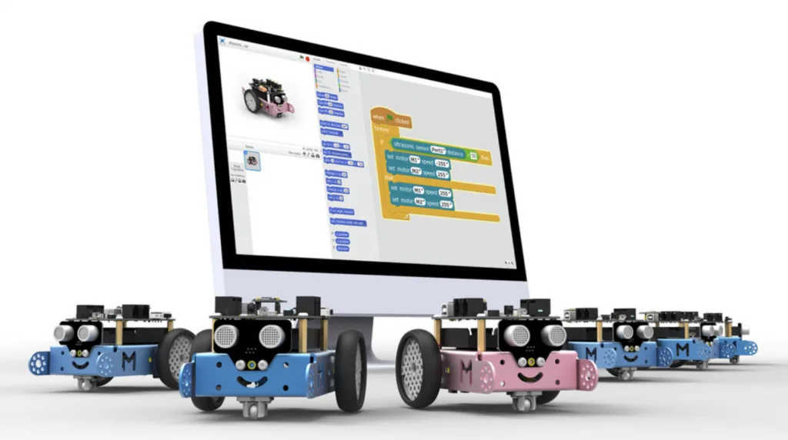

UBTECH — Profile
China's humanoid and educational robot giant.
Before they build factories, they build mBots. Educational robots are China's quietest export — and the pipeline that will supply the next decade of robotics engineers.

UBTECH, with about a 23% share of the market — through its Jimu building-block robots, uKit/UGOT STEM kits and the Yanshee humanoid for AI classrooms.
The Ministry of Education's 2025-2030 AI education blueprint requires programming education in every compulsory-education school by 2026.
Yes — China effectively makes the world's STEM robot kits. Makeblock's mBot, for example, ships to 140+ countries at price points that undercut Western rivals.
China's educational robots market is valued around US$244 million in 2025 and projected to reach US$1.16 billion by 2035 — a 16.9% CAGR driven by a very literal policy: the Ministry of Education's 2025-2030 AI education blueprint requires programming education in every compulsory-education school by 2026. The broader programmable-robot market in China is forecast at RMB 15.3 billion in 2026, growing ~19% a year.
| Company | UBTECH (优必选) | Makeblock (童心制物) | DJI Education |
|---|---|---|---|
| Role | ~23% share, largest | ~8.5%, pioneer | RoboMaster leagues |
| Flagship | uKit/UGOT, Yanshee | mBot series | RoboMaster S1 |
UBTECH is China's largest educational robot maker with roughly a 23% market share — Jimu building-block robots, the uKit/UGOT STEM kits and the Yanshee humanoid for AI classrooms. Notably, its education line is being overtaken internally by humanoids: in H1 2026 humanoids reached 46.5% of revenue, with the education segment still contributing meaningful school-channel sales. Makeblock (~8.5%) is the STEM pioneer, its mBot built on Arduino-compatible hardware with Scratch-based mBlock software — now a staple from Chinese classrooms to the export catalogs of 140+ countries. DJI Education runs the famous RoboMaster university league and the RoboMaster S1 tank-robot kits, feeding China's elite engineering competition pipeline.
Educational robots are China's talent pipeline — the same companies that train kindergarteners on mBots will hire from a generation that learned to code by building robots. And the economics are global: China makes essentially all of the world's STEM robot kits, at price points that undercut Western rivals. When the next wave of Chinese robotics founders emerges in the late 2030s, many will trace their first line of code to one of these classrooms.
China's humanoid and educational robot giant.
Humanoids moving into AI-education campuses.
The consumer robotics market China already owns.
Where China's next generation of robots is headed.
Company profiles, product pages and supplier analysis for China's robotics ecosystem.